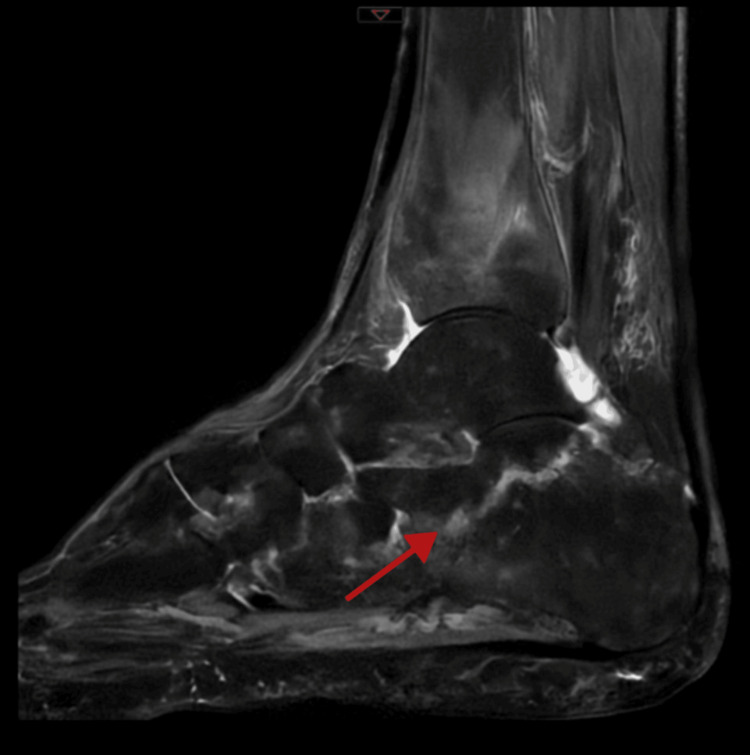

325 — Gãy kín đáo & gãy mỏi: phù tủy trên MRI / Occult & stress fractures
Tags: pattern:gay-kin-moi vung:xuong protocol:MRI-stress
Mức chắc chắn (certainty): tổng hợp y văn (literature synthesis) — nhóm tự biên từ y văn mở, chưa gắn ca nguyên văn đơn lẻ.
1. Tổng quan — X-quang mù 2–3 tuần đầu, MRI thấy phù từ ngày đầu
- Gãy mỏi (stress): mệt (fatigue: lực bất thường + xương lành, vận động viên) vs thiếu (insufficiency: lực thường + xương yếu, loãng xương/MTX/thuốc) — TẠI SAO X-quang thường âm tính 2–3 tuần đầu: phải mất 30–50% khoáng mới thấy, trong khi phù tủy (máu + dịch viêm) hiện ngay trên STIR/T2 fat-sat.
- Diễn tiến MRI: phù màng xương → phù tủy → đường gãy đen T1/T2 → gãy hoàn toàn — TẠI SAO đường gãy đen cả 2 xung: bè xương đặc + xơ, không còn proton tự do.
- Thuốc (methotrexate dài hạn) + viêm khớp cũng gãy thiếu dù DEXA bình thường — đừng đổ hết cho loãng xương.
2. Gamut đau xương cơ học không chấn thương (Gamut)
- Vận động viên + đau tăng dần + phù tủy + đường đen: gãy mệt — nghỉ + giảm tải 6–8 tuần.
- Già/loãng/MTX + đau + phù gót-chày: gãy thiếu — giảm tải + canxi/D + zoledronate + ngừng thuốc gây xương.
- X-quang âm + MRI phù: gãy kín — CT lát mỏng tìm đường gãy + bảo vệ.
- Phù lan + khối + đau đêm: u/viêm (bài 330/370) — sinh thiết/cấy, đừng bó bột mù.
3. Bảng so sánh phân biệt (ma trận đối chiếu)
| Thực thể (entity) | Hình ảnh điển hình | Chốt vào (rule-in) | Chốt loại (rule-out) | Gợi ý xác nhận |
|---|---|---|---|---|
| Gãy mệt | Phù tủy + đường đen T1/T2 + VĐV + xương lành | Tải tăng + phù khu trú + đường gãy | Uống MTX/loãng → thiếu | Nghỉ 6–8 tuần + quay lại dần |
| Gãy thiếu | Phù gót/chày/xương cùng + già/MTX + DEXA có thể bình thường | Lực thường + xương yếu + phù | Trẻ + tải cao → mệt | Giảm tải + D + zoledronate + ngừng MTX |
| Gãy kín chấn thương | X-quang âm + MRI phù + tiền sử ngã | Chấn thương + phù + đường gãy CT | Không chấn thương → mỏi | CT + bó/nẹp |
| U/viêm giả mỏi | Khối + hoại tử + ngấm + đau đêm/sốt | Khối/mủ + toàn thân | Phù đơn thuần + cơ học → mỏi | Sinh thiết/cấy trước bó bột |

Phù gót sau-dưới lan rộng, X-quang gần như bình thường, DEXA bình thường (MTX 15 năm!). Nguồn: Hajar et al., Cureus 2026 Fig. 1, CC BY 4.0.4. Protocol MRI stress
- MRI STIR/T1 + CT lát mỏng khi đau cơ học + X-quang âm; DEXA + thuốc + vitamin D khi gãy thiếu.
flowchart TD
A[Đau xương cơ học + XR âm] --> B{MRI phù tủy?}
B -->|Có + đường đen| C[Gãy mỏi: mệt hay thiếu?]
B -->|Có + khối| D[U/viêm: sinh thiết]
C -->|Trẻ + tải| E[Mệt: nghỉ 6-8 tuần]
C -->|Già/MTX| F[Thiếu: D + zoledronate]
5. Cạm bẫy
- Gãy thiếu gọi nhầm flare viêm khớp (ca trên!) — cơ học + MRI phù + viêm bình thường là gãy, không phải flare.
- DEXA bình thường loại trừ gãy thiếu — MTX/vùng chịu lực vẫn gãy (ca trên!).
- Phù lan tưởng u mổ oan — đường đen + bối cảnh tải + không khối mới là mỏi.
6. Tự lượng giá — Blind Quiz
Ca 1 — Bà 75 tuổi viêm khớp lui bệnh + đau gót cơ học 12 tháng, XR mờ. Đọc MRI.
- Hỏi: tín hiệu gì? Gãy thiếu hay flare? Thuốc nào phải ngừng?
Bấm để hiện đáp án
- Dấu hiệu (findings): phù tủy gót lan tỏa + đường gãy, không viêm màng hoạt dịch.
- Chẩn đoán (diagnosis): gãy thiếu gót do MTX (15 mg/tuần 15 năm) — ngừng MTX + giảm tải + zoledronate (DEXA bình thường vẫn gãy!).
- Nguồn: Hajar et al., Fig. 1, CC BY 4.0.
Ca 2 — Lính tân binh chạy + đau chày + phù + đường đen: mệt hay thiếu? (Bảng mục 3.)
Bấm để hiện đáp án
- Gãy mệt: nghỉ 6–8 tuần + quay lại dần (xương lành + tải bất thường).
Bài liên quan chéo
- 300 – Tổng quan MSK
- 320 – Gãy & trật khớp (gãy rõ)
- 330 – U xương (phù quanh u)
Không dùng để chẩn đoán độc lập khi chưa có người hướng dẫn.